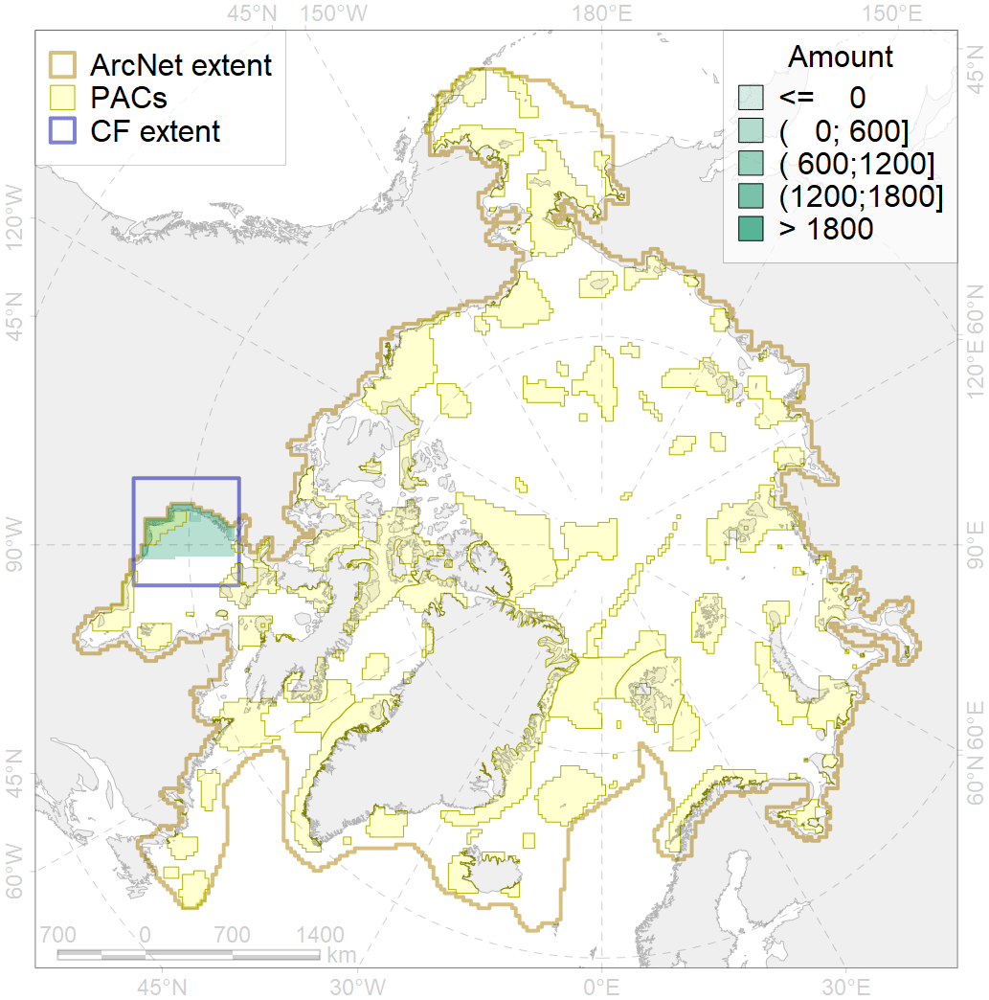
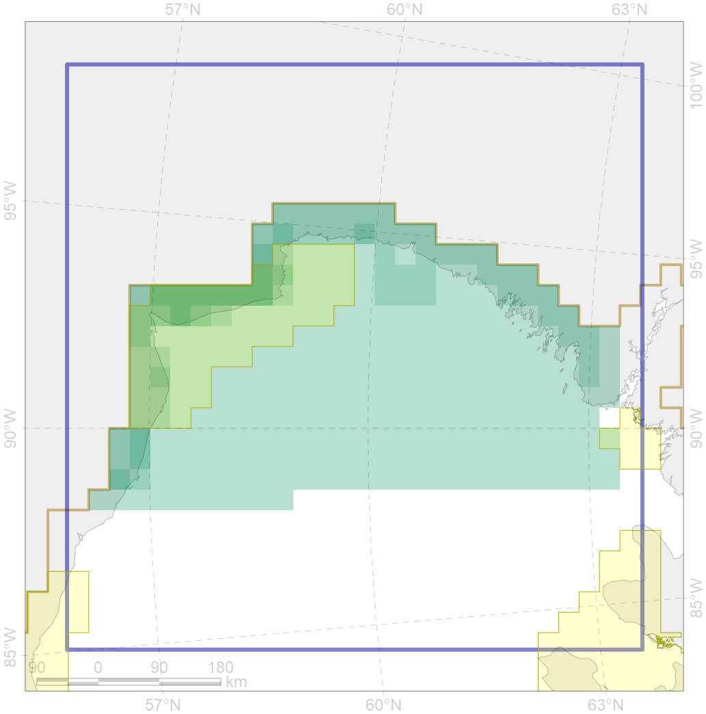

9019

| CF ID | 9019 |
| CF Name | polar bear of the WH (Western Hudson Bay) subpopulation distribution |
| Time Period | 1979-2017 |
| Source(s) | Dyck, 2014 a, b; Stapleton et al., 2014; Platonov, 2018 |
| Seasonality | January - December |
| Depth Horizon | 0 |
| Methodology | Field data, expert opinion, simulation results. |
| Author Name | Evgeniya Melikhova, Stanislav Belikov |
| Notes | |
| Conservation Target Set in the Scenario | 0.324 |
| Conservation Target Achieved in the Scenario | 0.342 (Scenario: 105.6%) |
| PAC ID | Proportion in the PAC | Contribution to ArcNet Target Achievement | PAC’s Contribution to the Achieved Target |
|---|---|---|---|
| 68 | 0.0% | 0.0% | 0.0% |
| 69 | 34.6% | 98.8% | 93.5% |
| inner | 34.6% | 98.8% | 93.6% |
| outer | 65.4% | 6.8% | 6.4% |